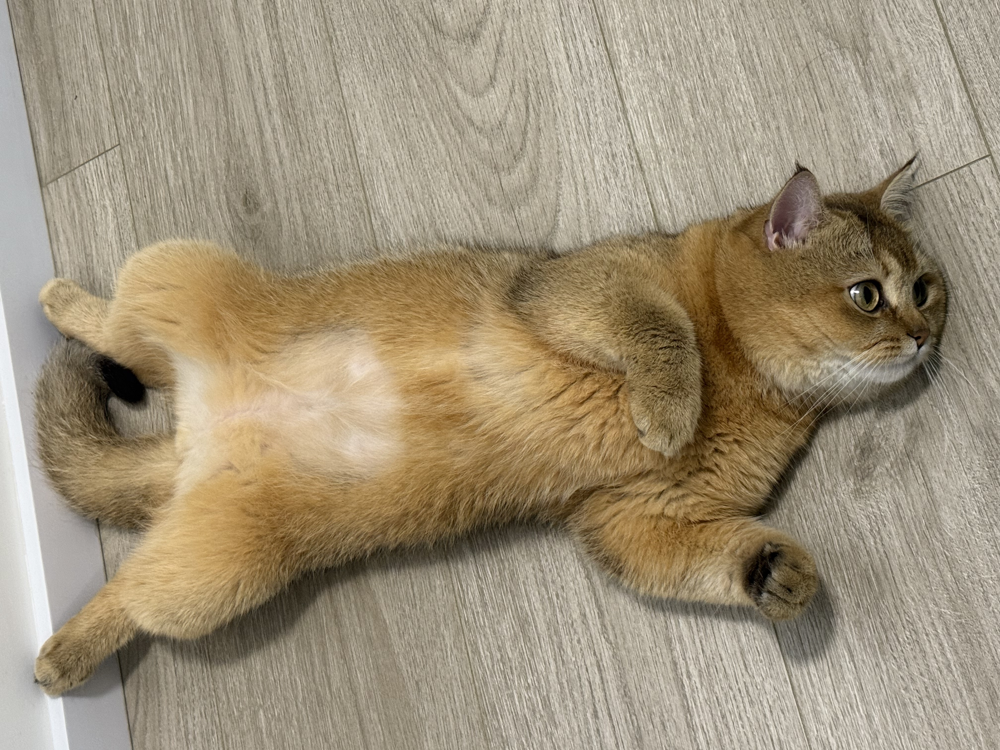

活泼
会叼起番茄玩具，也会突然钻进角落，探索欲一直在线。
About Domi
多米是家里的小太阳，会在沙发上站岗、在镜头前认真看人，也总能在普通的一天里带来很多小小的快乐。

Family Member
多米是一只公猫，已经绝育。现在一岁四个月，正是精力充沛、好奇心旺盛的时候。他会巡视沙发、守在饭碗旁，也会钻进小缝隙认真探索。
他亲近家人，会用靠近、蹭蹭、等待陪玩的方式表达喜欢。镜头里的多米有时候像小王子，有时候像调皮侦探，对这个家来说，他是每天生活里的重要陪伴。

Relaxed Moment
多米有时候会直接躺在地板上，把肚皮摊开，像是在宣布这里就是他的安心地盘。这样的姿势很日常，也很珍贵，因为它说明他在家里足够自在、足够被爱。
活泼的时候，他会到处探索；安静下来的时候，他又会用这种毫无防备的小姿势陪在身边。对家人来说，这些看似普通的瞬间，正是多米最可爱的生活痕迹。
Personality
会叼起番茄玩具，也会突然钻进角落，探索欲一直在线。
可以被抱着拍“吉祥”照，也会用圆眼睛认真回应家人的关注。
玩具、沙发、猫抓板和家里的每个小角落，都能成为他的快乐来源。
多米是家里的成员，他的每一次成长和日常都值得被认真记录。